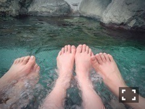
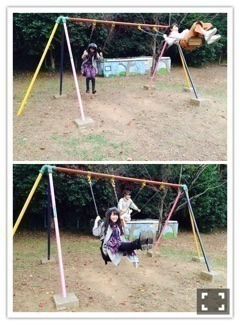
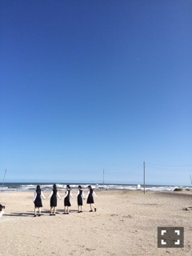
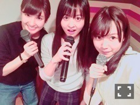

| 2015/11 16 Mon | ひめたん-0o0-その589 |
昨日の乃木坂工事中は
観ていただけましたか？
先週プレゼンさせていただいた
温泉企画が早速実現しました＼(^o^)／

さて、プレゼンから二週に渡って
わだかまりが云々と言っていたオチが
全部私の思い込みだったということで
ご迷惑おかけしました( >_< )
昨日のオンエアを受けて、
中元ってとんだめんどくせー奴だな
ドッキリだったなんて不憫だなと
楽しんでいただけたら幸いです。笑
日頃から見ててお分かりかと思いますが
不器用だったり、空回りが多かったり、
そんでもって考え込んじゃうタイプだから
私の勝手な思い込みに
二人を巻き込み、
スタジオのみんなを巻き込み、
ファンの皆さんまで巻き込み......
ドキドキハラハラさせてしまって
本当にごめんなさい( >_< )
私はただ三人で温泉に行きたくて
富山の時のことが聞きたくて
今回のロケを企画しました
この旅の苦いところは全て
私が受け持っていたので
二人にとってはひたすら
楽しい旅になったらいいなと
思っていたのです、が
これが逆ドッキリだったと知って
二人はあの日温泉を
純粋に楽しめなかったんだろうなと。
スタジオ収録の時まで
気を遣わせてしまっていたみたいで
申し訳なかったなという罪悪感で
あのあとから一人で
悶々としております(´；ω；｀)
にしても
ドッキリだとわからなかった！
あまりにわからなすぎて
私のスタジオでのリアクションが
めちゃめちゃ微妙だった！笑
さすが演技派の二人ですね。
疑う余地もなかったもん
だから私はよく
ドッキリ仕掛けられるんだろうな～
まあ、結果的に
晴れて念願だった温泉に行けたわけだし
富山のことも聞けたわけだし
何よりこの二人との企画が
工事中で実現したってことが
一番嬉しかったです！！
って思ってるのも私だけだったりして。笑
私が過度に
この三人組にこだわりを持っていたことは
反省してるし正直お恥ずかしい話ですが
そうでなくても二人は私にとって
いつも一歩先を行くお姉さんとして
尊敬してるし、いつまでも
背中を追いかけていたい存在です
二人から学んだこともそれぞれあります
万理華との関係、さゆとの関係は
こんな些細なことで
揺らぐようなものではないはず
それが今回、
私から二人への愛が重すぎた
故に暴走して番組の企画にまでしてしまった
ことがいけなかった！！
バラエティーとはいえ
辛い思いをさせてしまって
二人とも本当にごめんね。
こんな私ですがこれからも
仲良くしてくれると嬉しいです(´,,•ω•,,｀)
いろいろありましたがファンの皆さん
これからも私たちのこと
応援よろしくお願いします！
オンエアの中ではドッキリの全てを
答えあわせすることはできませんでしたが
ここはスタッフからの指示です、
ここは特に指示出てないです、
っていう箇所が他にもいくつかあるんです
もちろん私はあの日スタジオで
初めて聞かされたわけなんですが、
いや～わからんもんだな～
みなさんも是非考えながらもう一度
観ていただけると楽しいのでは？
なーんて。ふふ。

しかしまあ、
すんごい楽しそうに
ブランコしてんなぁ二人共。
気がつけば66枚連写してました～

日曜の夜はらじらー！サンデー
昨日は美彩先輩が来てくれました！
みさ先は、まーあーこのラジオで
新しいキャラを確立していくんだ、
すごいな先輩。
握手会での合言葉的なのが出来たようなので
良かったら皆さんやってみてください。
美彩先輩とだったから
終始リラックスしていられたよ！
また是非遊びに来てね～
そして、言い訳胸キュン！
めちゃめちゃ楽しかった(´｡•ω•｡`)
あれレギュラーコーナーにしませんかと
言いたいところなんだけれど
私が得意ってわかってるからあえて
うちのスタッフはしないんだろうな～
でも、らじらーは私にとって
失敗しても何しても許してくれる
あたたかい場所であり
今までもそうやって
鍛えていただいてるのでわかってます、
なんでもやりますよー(白目)
ただね、たまにはあんな感じの
可愛らしい企画も
いいんじゃないでしょうか......。
次回サンクエトワールの5人が登場！
前回はユニット名を決めましたが
今度はキャッチコピーを募集します！
すでに募集バナーがあるので
みなさんどんどん送ってください～
ユニット名みたいに、キャッチコピーも
今後たくさん発信していきたいです♡
4人へのメッセージもお待ちしてます
おたよりの宛先はこちら。

～お知らせ～
11/14 EX大衆
11/16 GREEN GORA
11/30 月刊エンタメ
12/2 Men's JOKER WATCH
今月から来月にかけて
他にも雑誌告知できそうです
待っててね♡
明日は
万理華とさゆと三人で撮影です！
おお！タイムリー！笑
楽しみ⊂( ˆωˆ )⊃うぇーい

パーチーした！カラオケパーチー！！
(＊´・ω・＊)
コメント(1066)
2015/11/16 23:37